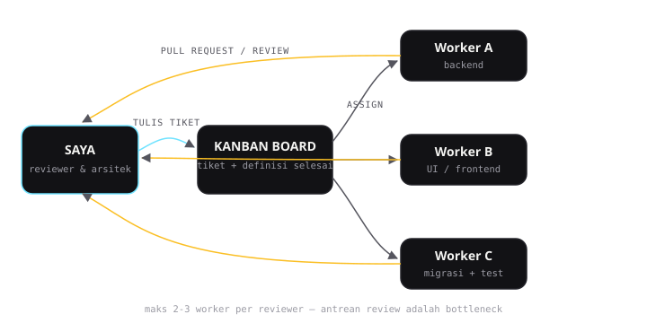

Workflow & Otomasi
Menjalankan Proyek Coding dengan Banyak AI Agent Sekaligus

Dulu saya satu-kanal: buka editor, ngobrol sama satu AI, copy-paste hasilnya, ulangi. Berhasil — tapi lambat. Setiap kali saya menunggu AI menulis kode, saya cuma menatap layar. Momen itu yang akhirnya membuat saya bertanya: kenapa harus satu agent kalau bisa beberapa sekaligus?
Artikel ini bukan tutorial "cara install X". Ini catatan lapangan dari proyek nyata: sistem POS (point of sale) yang saya bangun dengan Laravel 12 + Livewire, dijalankan oleh beberapa AI agent yang bekerja paralel lewat kanban board. Termasuk bagian-bagian yang awalnya salah.
Konsep dasarnya sederhana
Pola yang saya pakai sekarang terlihat seperti ini:
- Satu board kanban sebagai sumber kebenaran. Semua tugas hidup di sini, dalam bentuk tiket.
- Satu agent "manager" (dalam kasus saya, Hermes) yang memecah pekerjaan besar jadi tiket-tiket kecil, lalu menugaskannya.
- Beberapa agent "worker" yang mengerjakan tiket secara paralel — masing-masing punya sesi, konteks, dan working directory sendiri.
- Saya sebagai reviewer. Setiap hasil worker dicek sebelum dianggap selesai.
Perpindahan mentalnya penting: saya berhenti jadi "orang yang menulis kode dibantu AI", dan mulai jadi reviewer yang mempekerjakan AI. Kode yang saya tulis sendiri makin sedikit; keputusan desain yang saya buat makin banyak.
Tiket yang bagus = output yang bagus
Belajar paling mahal saya di sini. Worker AI hanya sebaik tiket yang diterimanya. Contoh tiket buruk yang dulu sering saya buat:
Buatkan halaman laporan penjualan.Hasilnya selalu mengecewakan, dan itu bukan salah AI — instruksi ini tidak menjawab: data dari mana, siapa yang boleh lihat, format apa, kasus tepi apa. Tiket yang akhirnya saya pakai punya bentuk kira-kira begini:
Fitur: laporan penjualan harian
Sumber data: tabel orders (kolom: id, total, status, created_at)
Akses: hanya role owner & admin
Output: tabel per tanggal, total per metode pembayaran
Kasus tepi: tanggal tanpa transaksi tetap muncul dengan angka 0
Definisi selesai: lolos manual test untuk 3 role + tanggal kosongBedanya bukan di format — tapi di definisi selesai. Worker sekarang tahu kapan harus berhenti, dan saya tahu apa yang harus saya cek.
Satu jam menulis tiket yang baik menghemat tiga jam me-review kode yang salah arah.

Paralel itu bukan gratis
Mengjalankan 3 worker sekaligus terdengar seperti 3× lebih cepat. Kenyataannya: tidak. Ada dua biaya tersembunyi.
Pertama, konflik file. Dua worker yang menyentuh file yang sama di branch yang sama = konflik yang saya harus bereskan manual. Solusi praktisnya sederhana: pecah tugas berdasarkan area, bukan berdasarkan waktu. Worker A pegang backend, worker B pegang UI, worker C pegang migrasi + test. Mereka hampir tidak pernah menyentuh file yang sama.
Kedua, review jadi bottleneck. Kalau saya tidak bisa review secepat worker menghasilkan, antrean review menumpuk dan seluruh sistem macet. Angka yang saya temukan: maksimal 2-3 worker aktif untuk satu reviewer manusia. Lebih dari itu, kualitas review turun, dan kode buruk lolos masuk — yang jauh lebih mahal daripada waktu yang "dihemat".
Model yang berbeda untuk pekerjaan yang berbeda
Temuan lain yang lumayan mengubah cara saya kerja: tidak semua tugas butuh model paling pintar. Tiket yang instruksinya sudah sangat jelas — misalnya "buatkan CRUD untuk tabel ini, ikuti pola file yang sudah ada" — dikerjakan model yang lebih murah dengan hasil yang sama bagusnya. Model top-tier saya simpan untuk pekerjaan yang benar-benar butuh nalar: desain skema, refactoring berisiko, debug yang aneh-aneh.
Dalam setup saya, worker yang mengerjakan tiket POS berjalan dengan model flash yang jauh lebih murah — dan hasilnya tetap lolos review. Estimasi biayanya turun drastis dibanding semuanya pakai model paling mahal.
Hal-hal yang masih gagal
Biar adil, ini yang sampai sekarang belum selesai:
- Worker terlalu percaya diri. Kadang worker melaporkan "selesai" padahal ada kasus tepi yang gagal. Definisi selesai di tiket membantu, tapi tidak menhabikan masalah ini. Review manual tetap wajib.
- Konteks yang meluruh. Sesi worker yang panjang mulai lupa keputusan awal. Solusi yang saya pakai: tiket harus self-contained — semua konteks yang dibutuhkan ditulis di tiket, bukan disimpan di ingatan sesi.
- Debug lintas-agent itu menyiksa. Kalau bug muncul dari interaksi hasil dua worker berbeda, tidak ada yang "punya" konteks penuh. Saya sendiri yang harus menelusuri dari awal.
Setup saya sekarang, ringkas
- Kanban board dengan kolom sederhana: antrian → dikerjakan → review → selesai
- Worker dijalankan dari profile terpisah, masing-masing dengan working directory sendiri
- Model murah untuk tiket mekanis, model kuat untuk tugas nalar
- Maksimal 2-3 worker paralel per reviewer
- Setiap tiket wajib punya definisi selesai yang bisa dites
Penutup
Orkestrasi multi-agent bukan sihir. Ia hanya memindahkan bottleneck dari "menulis kode" ke "menulis tiket dan me-review". Bagi saya itu pertukaran yang bagus — keputusan arah memang seharusnya jadi kerjaan manusia.
Kalau kamu baru mulai: jangan mulai dari tooling-nya. Mulai dari satu proyek kecil, satu board, dua worker, dan disiplin menulis tiket. Sisanya menyusul.
Punya pengalaman berbeda dengan multi-agent? Atau mau diskusi setup serupa untuk proyekmu? Hubungi saya — atau lewat Threads.